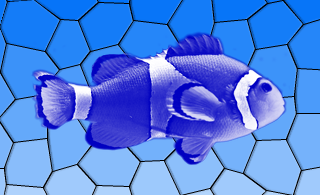

| Home · All Classes · Modules · QSS HELP · QSS 案例 · VER007 HOME |
该QGraphicsColorizeEffect类提供了一个着色效果。More...
该QGraphicsColorizeEffect类提供了一个着色效果。
一个着色效果与呈现的色调源其color（ ） 。颜色可以用修改的setColor（）函数。
默认情况下，颜色为淡蓝色（QColor（ 0，0， 192 ））。

该parent的说法，如果不是没有，原因self通过Qt的，而不是PyQt的拥有。
构造一个新的QGraphicsColorizeEffect实例。该parent参数被传递到QGraphicsEffect的构造。
从重新实现QGraphicsEffect.draw（ ） 。
这种方法也是一个Qt槽与C + +的签名void setColor(const QColor&)。
这种方法也是一个Qt槽与C + +的签名void setStrength(qreal)。
这是该信号的默认超载。
这个信号被发射时的效果的颜色变化。该color参数保存效果的新颜色。
这是该信号的默认超载。
这个信号被发射时setStrength（ ）改变了着色强度性能。strength包含的着色效果的新的力量值。
| PyQt 4.10.3 for X11 | Copyright © Riverbank Computing Ltd and Nokia 2012 | Qt 4.8.5 |